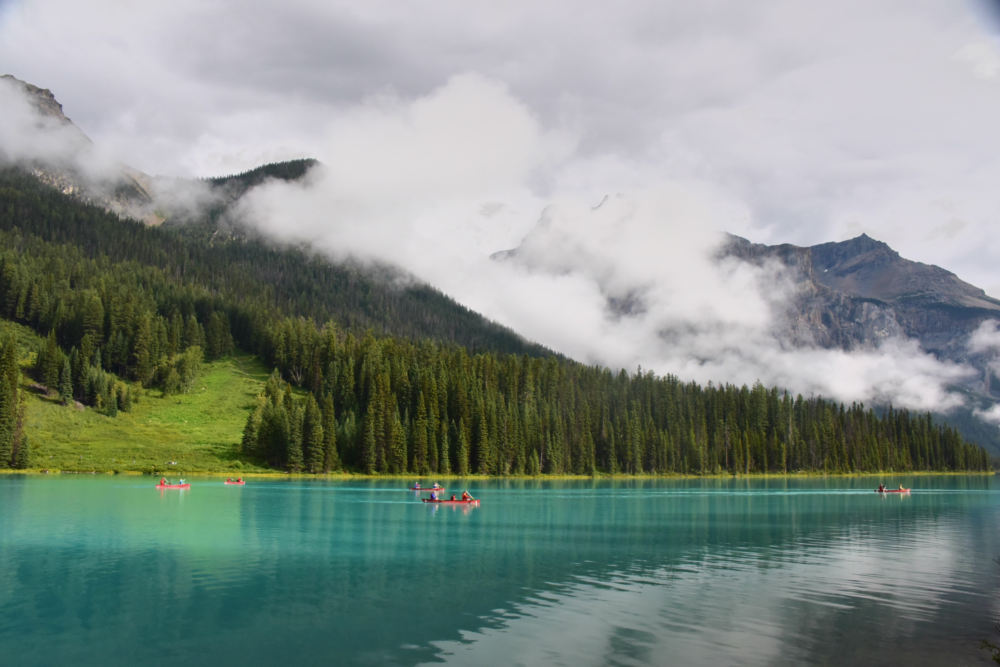
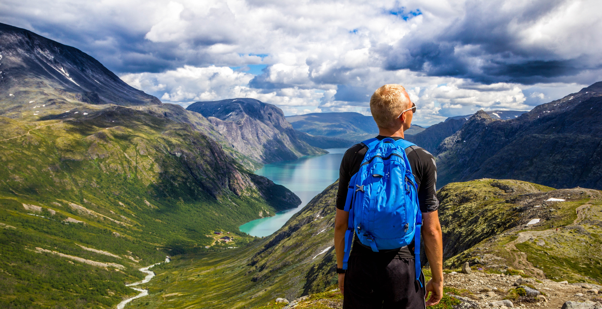

Before we share some of our top picks for fishing spots, it’s important to note a few details. Recreational fishing is regulated by bag limits. In order to fish in fresh water or the ocean, you will need a recreational fishing permit. These can be obtained at post offices across the city. If you’re taking a fishing charter, permits will be organised on your behalf. Charters to check out include Cape Fishing, False Bay Charters, Hooked on Africa and Big Blue Fishing Charters to name just a few. Make sure that you do your homework to find out what species are prohibited and which ones are cool to catch. For more info on permits, you can contact CapeNature on +27 (0)21 483 0000.
While you’re out on the water, be sure to avoid littering. Don’t ever throw fishing line away – this can kill birds and other creatures. Keep a waste bag to use for all of your litter, and always make sure that you enjoy the environment responsibly to protect it for future generations.
Freshwater fishing spots in Cape Town include a variety of lakes, rivers and dams including peaceful fly fishing. It is often a good choice for beginners as well as anglers who prefer to catch and release. Species typically found in freshwater locations includes carp, trout and bass. Some of the freshwater fishing spots in Cape Town that you can consider include the following:
Fishing Brandvlei Dam (Lake Marais). Brandvlei Dam forms part of the Lower Brandvlei River. Close by the dam is Worcester in Western Cape.
ACCOMMODATION AVAILABLE: Worcester Yacht Club is located on the banks of Brandvlei Dam in the Western Cape. Worcester Yacht Club is located 110 km from Cape Town.